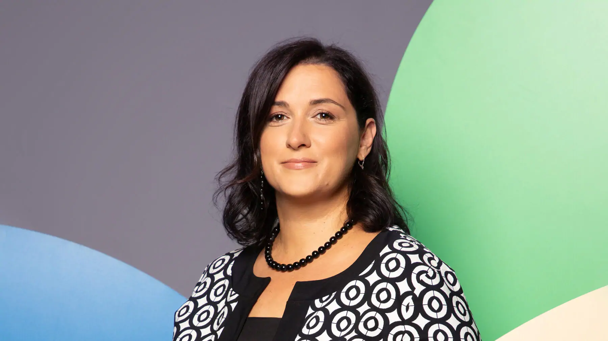

Даваме старт на NextGen Academy проекта с първата ни лекция на тема говорене пред публика, която ще се проведе на 16 април 2025г. в актовата зала на ППМГ/ПГРЕ. Началото на събитието е в 13:00ч., веднага след приключване на учебните занятия.
Наш гост ще бъде Силвия Кьосева, работеща в туристическия бранш от години. Освен с професията си на хотелиер, Силвия е ангажирана и като ментор в Teenovator - Бургас. Напълно отдадена в нещата, които прави, тя иска да предаде своите опит и съвети на младите идейни хора. Силвия смята, че по пътя към успеха трябва да има постоянство, желание и непоколебимост. Елате и се запознайте с нея, защото това, което ще каже, със сигурност ще бъде смислено и полезно.
В началото на нашата лекция ще започнем с теоретична част, в която Силвия Кьосева ще говори по темата, предавайки своите знания на аудиторията. След кратка почивка в средата на заложеното от нас време ще продължим с втората част, която има практическа насоченост. В нея чрез забавни игри, предизвикателства и казуси всеки ще може да усвои и упражни получените знания. В края на събитието ще има предвидено време за въпроси.
